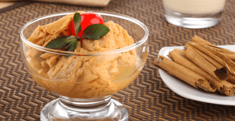
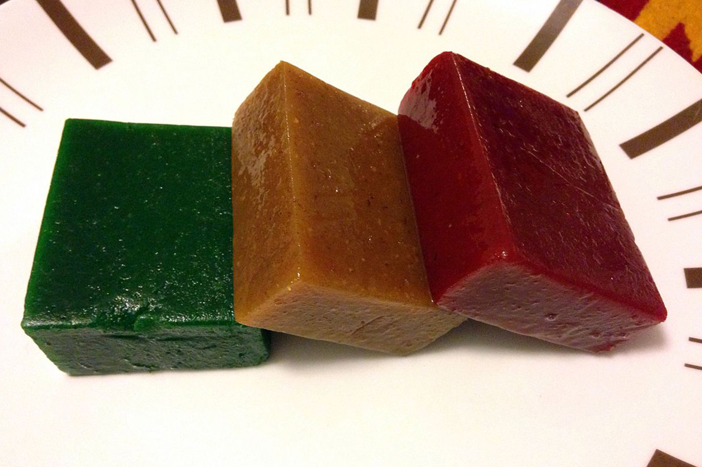
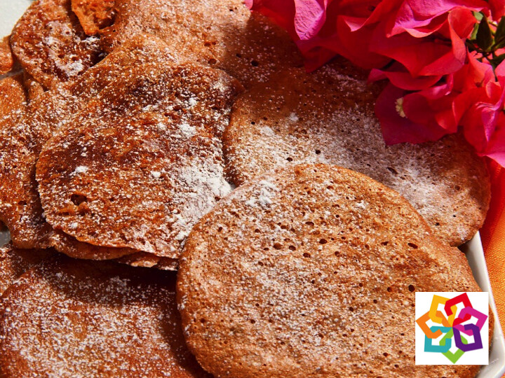

Chongos Zamoranos
e prepara con leche que se corta con cuajo, y a la que se le agregan huevos, canela y azúcar. El cuajo le da una consistencia única a este postre; se deja reposar por un tiempo, hasta formar una pasta que se corta en trozos.

Ates
Elaborados de fruta cocida con azúcar, son tan nutritivos como las mermeladas y pueden combinarse con diversos ingredientes en distintas preparaciones culinarias, gracias a su versatilidad, ya sea a modo de acompañamiento, relleno o decoración.

Morelianas
Como el nombre lo indica, es una especialidad local. Están hechas de masa de azúcar y nuez, con una capa exterior de dulce de leche espolvoreada con glasé.